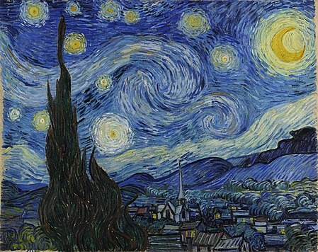

I QUADRI PIÙ FAMOSI
Home
Cerca
I QUADRI PIÙ FAMOSI
Sandro Botticelli - La nascita di Venere
Jan Vermeer - Ragazza con l’orecchino di perla
Van Gogh - Notte stellata

Edvard Munch - L’urlo
Salvador Dalí - La persistenza della memoria
Pablo Picasso - Guernica